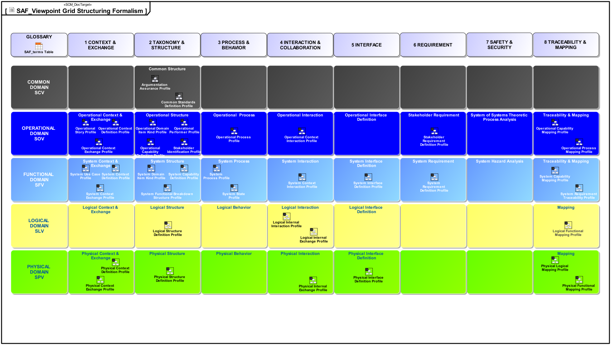

SAF partitions the amount of modeling work for e.g. a whole system architecture into smaller parts, which each deliver value for stakeholders of the architecture by satisfying their information needs.
These smaller parts are called viewpoints. They each serve a certain purpose, adress stakeholders concerns by presenting stakeholders a subset of the whole model.
This allows to partition and plan the work on the MBSE effort according to the problem at hand and helps to focus to the most important parts of the work. A MBSE approach can be planned by defining which viewpoints must be worked on in which phase of the MBSE effort, and it also could prioritize work or define different depths of elaboration for the viewpoints to work on.
Because of this, SAF helps to execute an MBSE effort by a plan which is backed by reasoning about the information need of stakeholders.
The viewpoints specify, which model elements shall be created in which kind of diagrams to serve the viewpoints purpose and adress the concerns of the stakeholders interested in the viewpoints.
The SAF Viewpoints are organized as a Grid featuring Domains as rows and Aspects as columns.
The Domains are oriented by a typical engineering workflow.
The Aspects are oriented by the kind of information needs, e.g. questions about structure are answered by viewpoints in the taxonomy and structure aspect. Typically similar kinds of questions need to be answered in multiple domains, hence the organisation of grid columns.

Typically, a system consists of subsystems in multiple hierarchy or decomposition levels.
The Functional, Logical and Physical Domain are applied recursively for system and subsystems.
Since the Mission Analysis and Stakeholder Requirements definition Processes cover the whole system, they are typically executed with the top level system scope. (These processes may require iterations when something new is learned, e.g. new stakeholders might be discovered during the selection of solutions for a subsystem, requiring the content of operational domain viewpoints to be updated)
The same applies to the Common Domain, it is also valid for all decomposition levels.
here an image of the vee should be shown with decomposition levels and domains covering the whole vee and others repeated. we could also show a decomposition tree, and the dev workflow tree with the gates (scr, srr, pdr, cdr)*
A System of Systems(SoS)1 approach might take advantage from separate operational domain descriptions for each system, while sharing some overarcing elements.
The MBSE work on system of systems could share a common model supportin a concept of operations (ConOps), in a common model library, and have individual operational domain descriptions supporting the OpsCon of the individual systems.
The approach should be selected according to the constraints of the SoS scenario; the degree of involvement of different organization cooperation in an SoS MBSE effort, especially the stakeholders having an interest in the SoS model.
here an image of the Vee should be placed with domains showing where on the vee, or a workflow with the gates. a detail view should show flow through the viewpoints, perhaps with key concerns they adress. This is complex. details must go to multiple sub pages, possibly organized by SEHB phases. There are also different usage scenarios of SAF
Note, that SoS is not just a decomposition - the term should only be used for scenarios which add complexity by independently developed and or operated systems with independent lifecycles, lacking overarcing planning or even agreement. ↩